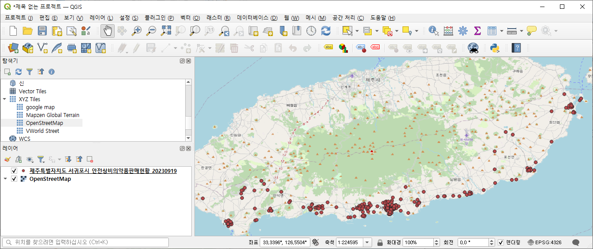
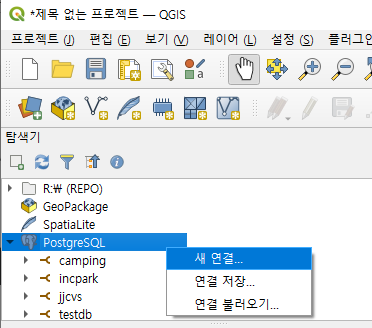

공간정보 CSV 파일을 postgreSQL에 부어 넣기
작성일: 2024. 7. 25.
- 버전
- QGIS: 3.34
- postgreSQL: 16.3
QGIS를 이용해 위도와 경도를 담은 CSV 파일을 postgreSQL에 부어 넣기
공공 데이터 포털
공공 데이터
공공기관이 만들어 내는 모든 자료나 정보, 국민 모두의 소통과 협력을 이끌어 내는 공적인 정보
공공 데이터 포털(https://www.data.go.kr)
- 공공데이터를 모아 서비스하는 웹사이트
- 행정안전부 주관, 2013년 시작
- 계기: 서울버스 앱(2009)
공공데이터 포털에서 CSV 파일 다운로드
QGIS 작업
QGIS에 자료 보이기
QGIS의 메뉴에서 레이어 > 레이어 추가 > 구분자로 분리된 텍스트 레이어 추가 를 선택한다.
여기까지 하면 아래와 같이 제주 서귀포시의 안전상비의약품을 판매하는 곳들이 나타난다.
하지만 지도가 표시되지는 않는 상태이다.
이 문제를 해결하기 위해
왼쪽 탐색기에서 XYZ Tiles > OpenStreetMap 를 더블클릭한다.
그럼 지도가 나타나는데 좀 전에 나타났던 판매소들 위로 나타나서 그 판매소들이 안 보이게 된다.
이 문제를 해결하기 위해 레이어 에서 OpenStreetMap를 아래로 끌어 내려 화면에 보이는 순서를 바꿔준다.

이 레이어 순서대로 처리하면 드디어 지도 위에 판매소들이 보이는, 우리가 원했던 결과를 얻게 된다.
QGIS의 자료를 postgreSQL에 부어 넣기
QGIS와 postgreSQL 연결
먼저 레이어에서 postgreSQL로 부어 넣을 자료가 담긴 레이어를 선택한다.

QGIS 탐색기에서 postgreSQL > 새 연결을 선택한다.
위와 같이 연결 생성 창의 값들을 채운다.

위 과정을 통해 새로 만들어진 localhost를 더블클릭한 후 사용자 이름과 비밀번호를 입력한다.
QGIS의 자료를 postgreSQL로 내보내기
QGIS 메뉴에서 데이터베이스 > DB 관리자를 선택한다.
- localhost를 더블클릭한다.
레이어/파일 불러오기메뉴를 선택한다.
벡터 레이어 가져오기 라는 이름의 창이 나오는데, 약간 이름이 이상하긴 해도 이 메뉴에서 QGIS의 자료를 postgreSQL로 보내는 거 맞다.
데이터의 양이 많으면 고장났나 싶을 정도로 시간이 오래 걸리고 QGIS도 응답없음 상태가 되기도 하지만 기다리자.
이 예제에서 사용한 데이터는 데이터 양이 많지 않아 금방 끝난다.
paAdmin에서 결과 확인
주의 사항
- 실제로는 한글로 된 태아불명이나 필드명은 사용할 수 없으니 다음 2항목에 대해 미리 영어로 바꿔 놓고 사용해야 한다.
- 테이블명: 파일명에서 가져옴
- 필드명: CSV 파일의 헤더에서 가져옴.